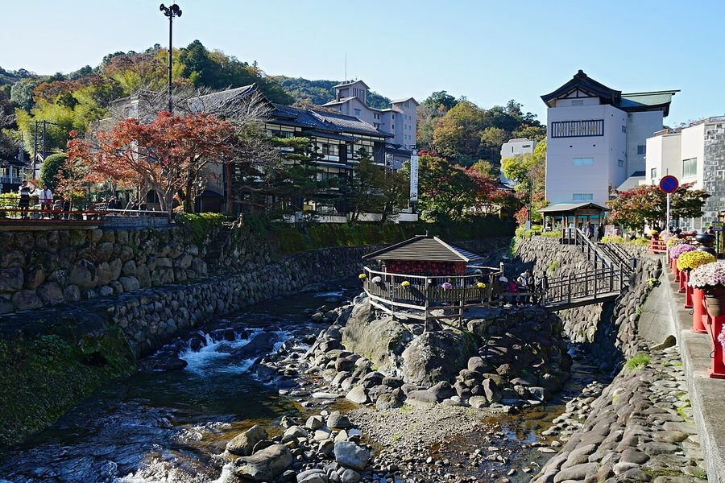
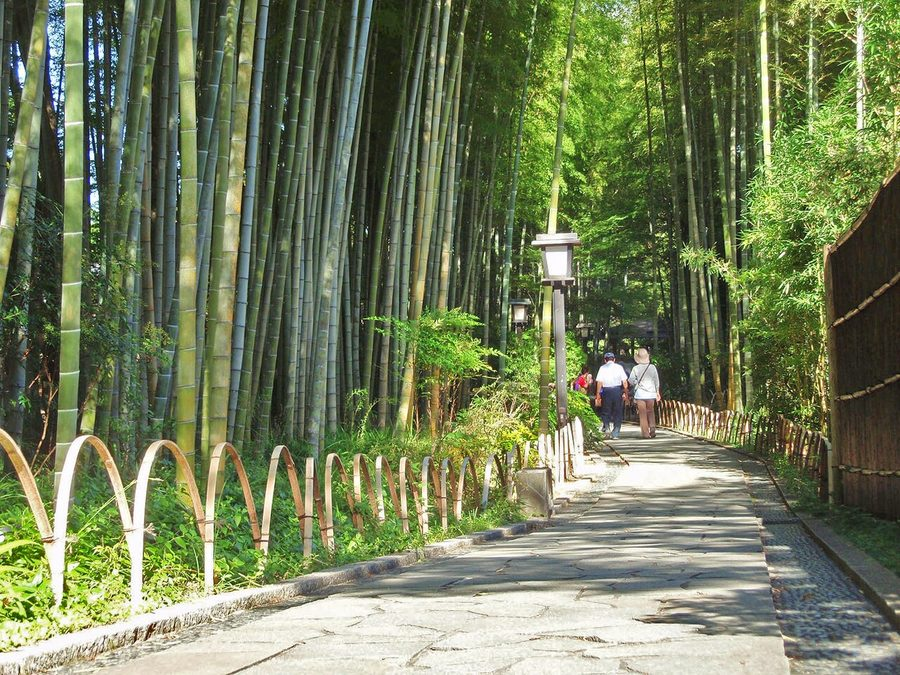
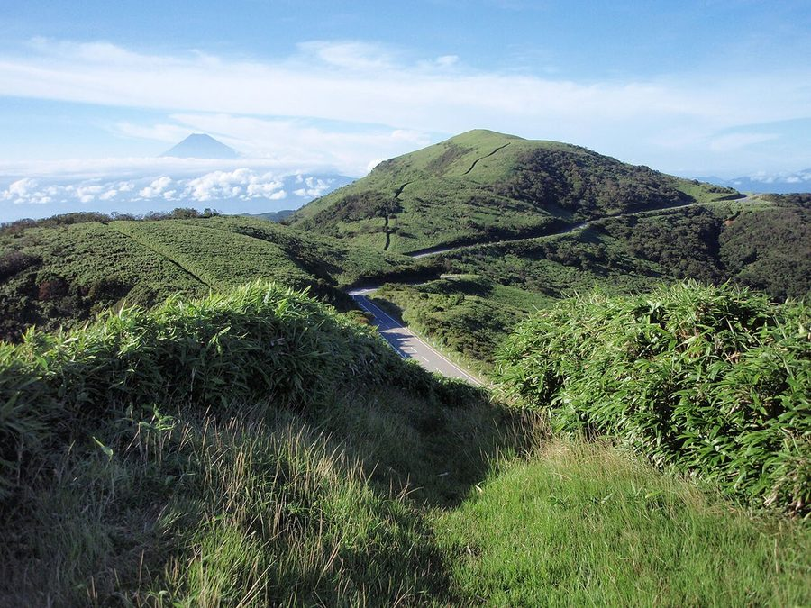
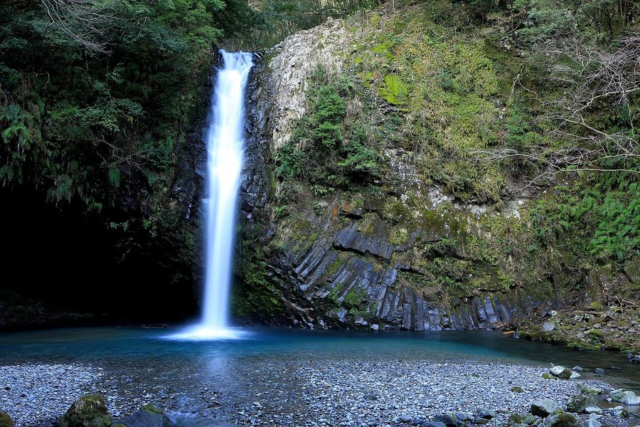

静岡県伊豆市の日帰り温泉・銭湯・サウナ（38件）
寄り道スポット検索アプリ「ヨッテコ」の収録データから、静岡県伊豆市の日帰り温泉・銭湯・サウナを営業時間・料金つきで一覧にしました（2026年8月時点）。
最も安いのは湯ヶ島温泉 瀬古の大湯（200円）。最も遅くまで入れるのは碧き凪ぎの宿 明治館（24:00まで）。朝風呂ならリブマックスリゾート 天城湯ヶ島 木太刀温泉（6:00開店）。
静岡県伊豆市はどんなまち？
数字で見る🔍静岡県伊豆市
まちの横顔




- 沿革と広さ: 2004年4月1日に、田方郡の修善寺町・土肥町・天城湯ケ島町・中伊豆町の4町が合併して発足したまちです。静岡県の面積の4.1%を占め、浜松市・静岡市・川根本町に次いで県内4番目に広い基礎自治体ですが、市域の67%は山林で、可住地面積は17.3%ほどにとどまります。人家の多くは狩野川とその支流沿いのわずかな平地に集まっています。
- 地形と気候: 標高500〜1,000メートル級の分水嶺に囲まれた内陸部と、駿河湾に面した海岸部の二つに大きく分かれ、両地域は標高約570メートルの船原峠で隔てられています。海岸部は黒潮の影響で内陸部より温暖です。市域はかつて火山島だった伊豆半島にあるため火山活動に由来する地形が随所に残り、半島西部の伊豆東部火山群は現在も活動中です。天城山に近い山間部では積雪のある年も珍しくなく、天城山では年間降水量が4,000ミリメートルを超えることもあります。
- 温泉と自然: 山稜部や海岸部は富士箱根伊豆国立公園に指定されており、修善寺、湯ヶ島、土肥など自然環境を活かした特色のある温泉地を有しています。
寄り道充実度（全国偏差値）
偏差値・順位は、ヨッテコ収録データ（2026年8月時点・26,033件）を市区町村別に集計した施設数の全国分布（1,728市区町村）から毎回算出しています。カードを押すとカテゴリ別の分析に切り替わります。
日帰り温泉から見た静岡県伊豆市
市内の日帰り温泉は38件、全国44位タイ（上位2.5%）。——寄り道できる湯の数は、全国でも上位クラス。
- 露天風呂がある店は63%、全国水準（46%）の1.4倍。分水嶺の山々に囲まれ市域の67%を山林が占める市。屋根のない湯船が当たり前、という土地柄なのでしょうか。
- 源泉を使う店の割合は97%で、全国の67%を上回ります。修善寺・湯ヶ島・土肥など自然を活かした温泉地を有し、山稜部や海岸部が富士箱根伊豆国立公園に指定される市。97%が天然温泉という構成は、地下から湧くものの豊かさを映しています。
- サウナを備える店は29%。全国水準（52%）より控えめです。サウナで整えるより、湯そのものに浸かりに行くまちです。
- 夜遅くまで開いている店は21%にとどまります（全国40%）。立ち寄るなら日のあるうちに、と考えておくのが良さそうです。
- 入浴料の中央値は865円でした（判明22件）。全国の650円と比べて33%高い水準です。予算を見ておくなら、865円を目安にできます。
出典: 施設データ=ヨッテコ収録データ（26,033件・2026年8月時点）。偏差値・全国順位・全国水準は全1,728市区町村の分布から毎回算出。 / 人口=総務省「住民基本台帳に基づく人口、人口動態及び世帯数」（2026年1月1日現在） / 面積=国土地理院「全国都道府県市区町村別面積調」（2026年4月1日時点） / 森林率=農林水産省「2025年農林業センサス（農山村地域調査）」市区町村別林野率（2025年、林野率（林野面積÷総土地面積）） / 年平均気温=気象庁「平年値（1991-2020年）」。市区町村の代表点（国土交通省「大字・町丁目レベル位置参照情報」）から最も近い観測点の値 / まちの解説=日本語版Wikipedia「伊豆市」（https://ja.wikipedia.org/wiki/伊豆市、2026年8月21日取得）より作成（CC BY-SA 4.0） / 写真=Wikimedia Commons（各キャプションに作者・ライセンスを記載）
曜日別の営業施設数
| 月 | 火 | 水 | 木 | 金 | 土 | 日 |
|---|---|---|---|---|---|---|
| 36 | 33 | 34 | 34 | 35 | 37 | 37 |
火曜日が最も休みが多く（各4件が定休）、年中無休は30件です。※営業時間データのある37件で集計
入浴料金の分布（大人）
| 500円以下 | 8件 | |
| 501〜800円 | 2件 | |
| 801〜1,200円 | 5件 | |
| 1,201円以上 | 7件 |
料金が確認できた22件で集計。
施設一覧
| 施設 | 営業時間 | 料金（大人） |
|---|---|---|
| AKARI et KAORI あかり え かおり 天然温泉露天風呂 | 11:30〜14:00 | 1,500円 |
| たたみの宿 湯の花亭 天然温泉露天風呂サウナ | 15:00〜18:30 | — |
| ものわすれの湯 船原館 天然温泉露天風呂 | 13:00〜16:00 | — |
| アルカナイズ 伊豆中伊豆の森の中に佇むオーベルジュ。豊かな自然、山海の豊かな食材に恵まれた土地でシェフとバトラーとの何気ない会話を楽し… | 09:00〜18:00 | — |
| テルメいづみ園 天然温泉露天風呂 | 10:00〜21:30（火休） | 850円 |
| ブリーズベイ 修善寺ホテル 天然温泉露天風呂 | 13:00〜15:00 | — |
| ホテルハーヴェスト天城高原 天然温泉サウナ 天城高原のホテル施設。単純温泉（弱アルカリ性低張性高温泉）でサウナ、ミストルーム設備がある。 | 00:00〜24:00 | — |
| ラフォーレ修善寺 森の湯 天然温泉露天風呂サウナ | 12:00〜21:00 | 940円 |
| リブマックスリゾート 天城湯ヶ島 木太刀温泉 天然温泉露天風呂サウナ 天城湯ヶ島の木太刀温泉。源頼朝ゆかりの歴史的な温泉で、露天風呂と洞窟風呂が特徴。 | 06:00〜24:00 | 1,400円 |
| 中伊豆ワイナリーヒルズ 縄文之御神湯 天然温泉露天風呂サウナ 中伊豆ワイナリーヒルズ内の温泉施設。硫酸塩温泉のほか、サウナと水風呂も完備。貸切風呂で家族利用も可能。 | 11:00〜22:00 | 880円 |
| 伊豆市 湯の国会館 天然温泉露天風呂サウナ 伊豆市の温泉施設で露天風呂を備えた公共温泉。 | 10:00〜21:00 | 880円 |
| 修善寺温泉 ホテル滝亭 天然温泉露天風呂 | 13:30〜21:00 | — |
| 修善寺温泉 民宿福井 天然温泉露天風呂 | 10:00〜21:00 | — |
| 修善寺温泉 真湯共同浴場 天然温泉 | 17:00〜23:00 | — |
| 修善寺温泉 筥湯 天然温泉 修善寺温泉の共同浴場。駐車場がないため近くの有料駐車場利用。 | 10:00〜21:00 | 700円 |
| 元湯温泉 元湯共同浴場 天然温泉 | 14:00〜21:00（水休） | 400円 |
| 土肥ふじやホテル 天然温泉露天風呂サウナ 西伊豆で最古と呼ばれる土肥温泉の源泉を持つ宿。江戸時代から続く歴史を持つ温泉で、駿河湾を望む最上階の大浴場が特徴。 | 12:00〜14:30 | 1,500円 |
| 土肥温泉 湯茶寮マルト 天然温泉露天風呂 土肥温泉の日帰り施設。ナトリウム-塩化物・硫酸塩泉で美肌効果が期待できる。 | 10:00〜21:00 | 1,000円 |
| 土肥温泉 粋松亭 天然温泉露天風呂 土肥温泉の宿泊施設。100%天然温泉で知られ、夕食・朝食付きの宿泊プランを提供。日帰り利用情報は不記載。 | 15:00〜20:00 | — |
| 天狗之杜 天然温泉 個室でゆっくりとくつろぐことができる施設。 | — | — |
| 宙SORA 渡月荘金龍 天然温泉露天風呂サウナ | 11:30〜16:00 | 1,900円 |
| 富士陽光ホテル 天然温泉露天風呂 | 11:00〜17:00 | — |
| 小川温泉共同浴場 天然温泉 | 14:30〜19:30（木休） | 250円 |
| 屋形温泉共同浴場 天然温泉 | 14:00〜20:00 | 400円 |
| 川端の宿 湯本館 天然温泉露天風呂 川端康成の名作『伊豆の踊子』執筆の地として知られる湯本館。天城湯ケ島温泉の源泉かけ流しで、文学の香る宿。 | 12:00〜14:30 | — |
| 弁天の湯共同浴場 天然温泉露天風呂 地元の方も利用している土肥温泉の共同浴場。みかげ石で造られた男女別の内湯と露天風呂が完備、掛け流しの湯が特徴。 | 13:00〜20:00 | 500円 |
| 新井旅館 天然温泉露天風呂 | 09:00〜18:00 | — |
| 湯ヶ島ゴルフ倶楽部 ホテル董苑 猫越ノ湯 天然温泉露天風呂サウナ 湯ヶ島ゴルフ倶楽部のホテル施設。自家源泉掛け流しでメタケイ酸93.7mg（美肌効果）を含む。低張性・弱アルカリ性高温泉。 | 12:00〜22:00 | — |
| 湯ヶ島温泉 瀬古の大湯 天然温泉 | 11:00〜21:00 | 200円 |
| 湯治場21 大見山荘 天然温泉 | 09:30〜17:00 | — |
| 瑞の里 ○久旅館 天然温泉露天風呂サウナ 修善寺温泉1200年の歴史を持つ泉。弘法大師ゆかりの霊泉。5つのお風呂で無色透明のやさしい湯ざわりを満喫。 | 14:00〜18:00 | 1,500円 |
| 白岩の湯 天然温泉 | 10:00〜20:00 | 420円 |
| 碧き凪ぎの宿 明治館 天然温泉露天風呂 西伊豆土肥温泉の日帰り対応宿。ナトリウム・カルシウム硫酸塩・塩化物泉で約57度の温泉を15.5m大浴場で提供。 | 00:00〜24:00 | 2,500円 |
| 神代の湯 天然温泉露天風呂サウナ | 12:00〜20:00 | 1,500円 |
| 美肌の湯 希望園 天然温泉 伊豆で稀なアルカリ性単純温泉（pH9.5）を100%源泉かけ流しで提供する日帰り温泉。美肌効果の高い泉質として知られ、豊… | 10:00〜20:00（火・水休） | 700円 |
| 西平温泉 河鹿の湯 天然温泉 | 13:00〜22:00（木休） | 400円 |
| 金福荘 天然温泉露天風呂 水上温泉地に位置する旅館。露天風呂が特徴。 | 09:00〜18:00 | — |
| 馬場温泉 楠の湯共同浴場 天然温泉 | 13:00〜21:00（火・金休） | 400円 |